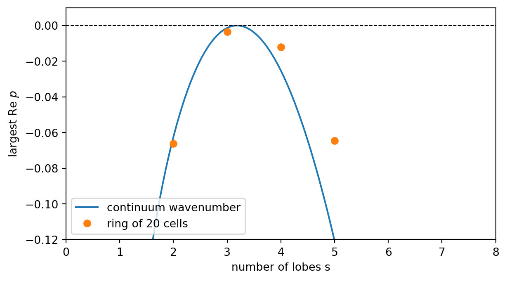

Turing’s Original Analysis
Module 4: Space and Pattern Formation
NoteReading
- Compulsory: Turing (1952), Sections 6 to 10 (pp. 46 to 65): reactions and diffusion in a ring of cells, the six types of behaviour, and the numerical example. Sections 1 to 5 are background on the chemistry.
- Recommended: Britton (2003), Section 7.2 (pp. 206 to 210), for the same linear analysis in modern notation, and Kondo and Miura (2010), the section “The Original Turing Model”.
The pages of this module use the notation of the textbook literature. Turing’s paper, written before computers could be used for such questions, is organised differently: a ring of cells instead of a continuum, and a classification of the possible forms of instability. Reading it explains where the conditions of Turing Conditions come from and which claims are Turing’s own.
What the Source Says
- The paper proposes that reacting and diffusing chemicals, called morphogens, can account for the main phenomena of morphogenesis. A homogeneous system can develop a pattern through an instability of the homogeneous equilibrium that is triggered by random disturbances (Turing 1952, Summary).
- The model is deliberately simple. Mechanical effects are set aside, and tissue is either a set of point-like cells or a continuum. The analysis is linear and applies only while the state is close to homogeneous. Turing calls this a serious assumption, justified because the early pattern should resemble the later one (Turing 1952, sec. 2 and 11).
- Two morphogens \(X\) and \(Y\) on a ring of \(N\) identical cells are studied first. Cell-to-cell diffusion constants are \(\mu\) and \(\nu\), and the reaction rates are \(f(X, Y)\) and \(g(X, Y)\) (Turing 1952, sec. 6).
- Linearization at the equilibrium gives four “marginal reaction rates” \(a, b, c, d\). The ring is then decoupled by Fourier components, and each component \(s\) obeys a pair of linear equations with its own pair of exponents (Turing 1952, sec. 6 and 7).
- After a long time the component with the largest real part of the exponent dominates. If that exponent is real the pattern is stationary, and if it is complex the waves travel (Turing 1952, sec. 8).
- The number of lobes on the ring is obtained by dividing the circumference by a “chemical wave-length”. This is generally not an integer, and the observed number is one of the two nearest integers, usually the nearest (Turing 1952, sec. 8 and 11).
Notation Dictionary
The four notations that you will meet across the sources are related as follows. Only the first column is used in the rest of this module.
| Quantity | These notes | Britton (2003) | Turing (1952) |
|---|---|---|---|
| Species | \(u\), \(v\) | \(u\), \(v\) | \(X\), \(Y\) |
| Diffusion | \(1\), \(d = D_v/D_u\) | \(D_1\), \(D_2\) | \(\mu\), \(\nu\) (ring of cells); \(\mu'\), \(\nu'\) (continuum) |
| Kinetics scale | \(\gamma\) | \(\alpha = \gamma_B^2\) | absorbed in \(a, b, c, d\) |
| Jacobian entries | \(f_u, f_v, g_u, g_v\) | \(f_u^*, f_v^*, g_u^*, g_v^*\) | \(a, b, c, d\) |
| Spatial eigenvalue | \(k^2\) | \(\lambda\) | \(U = (2\pi/\lambda_{\rm wave})^2\) |
| Temporal eigenvalue | \(\sigma\) | \(\sigma\) | \(p\) |
| Growth rate | \(\operatorname{Re}\sigma(k^2)\) | \(\rho(\lambda)\) | \(I\) (maximum of \(\operatorname{Re}p\)) |
Two cautions follow from the table. First, Turing’s \(d\) is the entry \(g_v\) of the Jacobian, not a diffusion ratio. Second, Britton’s \(\gamma_B\) is a length scale and his reaction scale is \(\alpha = \gamma_B^2\), so Britton’s \(\alpha\) plays the role of the \(\gamma\) used here. Both Britton’s rescaling and the one in these notes make \(\gamma\) proportional to the square of the domain length.
For the continuum, Turing’s equation (9.1) is \((p - a + \mu' U)(p - d + \nu' U) = bc\). Expanding the determinant \(\det(J - U\,\mathrm{diag}(\mu', \nu') - pI)\) with \(J = \begin{pmatrix} a & b \\ c & d\end{pmatrix}\) gives exactly this quadratic, so it is the dispersion relation of the Dispersion Relation page written in his symbols, with \(k^2 = U\).
The Six Cases
Turing finds six essentially different forms of the onset of instability (Turing 1952, sec. 8 and 11). The table lists them with the labels that Kondo and Miura (2010) use in their Figure 2A.
| Turing | Behaviour | Morphogens needed | Kondo and Miura |
|---|---|---|---|
| (a) | Stationary, extreme long wavelength: every cell drifts away from equilibrium in step with its neighbours | 1 or more | not listed (their case I is the stable uniform state) |
| (b) | Oscillatory, extreme long wavelength: synchronised oscillation | 2 or more | II |
| (c) | Stationary, extreme short wavelength: neighbouring cells differ | 2 or more | III |
| (d) | Stationary waves of finite wavelength | 2 or more | VI, the Turing pattern |
| (e) | Oscillatory, finite wavelength: travelling waves | 3 or more | V |
| (f) | Oscillatory, extreme short wavelength | 3 or more | IV |
Case (d) is the one that matters for this module. Turing states that it requires \(bc < 0\) (Turing 1952, Equation 9.4a). In the notation of these notes, \(bc = f_v g_u\), which is the sign requirement for the cross terms derived on the Turing Conditions page. For two morphogens only (a) to (d) are possible, and cases (e) and (f) need three or more (Turing 1952, sec. 11). This agrees with Britton, who shows that for two equations the coefficient \(a_1(\lambda) = (D_1 + D_2)\lambda - \alpha(f_u^* + g_v^*)\) is positive as soon as \(\operatorname{tr} J < 0\), so that a Hopf (oscillatory) instability with \(k \ne 0\) is impossible (Britton 2003, sec. 7.4.1).
WarningA discrepancy between sources
The caption of Figure 2A in Kondo and Miura (2010) describes the six states as those toward which “the two-factor RD system” can converge, and case V (travelling waves) is among them. By Turing’s analysis and by Britton’s trace argument, a system of two reaction-diffusion equations cannot produce cases (e) and (f). The review’s figure is best read as a list of what reaction-diffusion systems in general can do, with the oscillatory finite-wavelength cases requiring a third component.
Turing’s Dappling Remark
Turing links the simplest case (a) to “dappled” colour patterns and shows a two-dimensional example of a patchy pattern from this type of instability. He also notes that if dappling arose in this way, the pattern would have to be laid down very early in development, since later the distances would exceed what diffusion can cover (Turing 1952, sec. 11 and Figure 2). His main biological examples of case (d) are the tentacles of Hydra and whorled leaves, which he discusses as approximations to a ring (Turing 1952, sec. 11). Compare this with the later work on mammalian coats on Animal Coat Patterns.
The Numerical Example, Recomputed
In Section 10 Turing gives a specific system on a ring of \(N = 20\) cells. In his special units (time unit \(1000\) s) the cell-to-cell diffusion constants are \(\mu = 1/2\) for \(X\) and \(\nu = 1/4\) for \(Y\). The kinetics are
\[ \begin{aligned} f(X, Y) &= \tfrac{1}{16} - \tfrac{1}{32}\left(50XY + 7X^2 - 55(1+\gamma_T)\right), \\ g(X, Y) &= \tfrac{1}{32}\left(50XY + 7X^2 - 55(1+\gamma_T)\right) - \tfrac{1}{16}Y, \end{aligned} \tag{1}\]
where \(\gamma_T\) is the catalyst parameter, which is slowly increased in the paper to drive the system through the instability (Turing 1952, sec. 10). At \(\gamma_T = 0\) the equilibrium is \(X = Y = 1\). The code differentiates these functions numerically and scans the Fourier modes of the ring.
import numpy as np
a, b, c, d = jac.ravel()
print("marginal rates a, b, c, d =", np.round([a, b, c, d], 4))
print("tr J = %.3f, det J = %.4f" % (np.trace(jac), np.linalg.det(jac)))
for s in (2, 3, 4, 5):
print("s =", s, " largest Re p = %.4f" % top_rate(4 * np.sin(np.pi * s / n_cells) ** 2))
lam = np.linspace(0.5, 1.5, 100001)
rates = np.array([top_rate(x) for x in lam[::100]])
lam_best = lam[::100][np.argmax(rates)]
print("best lambda = %.3f, growth there = %.2e" % (lam_best, rates.max()))
print("matching s on the ring = %.3f" % (n_cells / np.pi * np.arcsin(np.sqrt(lam_best) / 2)))marginal rates a, b, c, d = [-2. -1.5625 2. 1.5 ]
tr J = -0.500, det J = 0.1250
s = 2 largest Re p = -0.0663
s = 3 largest Re p = -0.0035
s = 4 largest Re p = -0.0120
s = 5 largest Re p = -0.0646
best lambda = 1.000, growth there = -6.94e-12
matching s on the ring = 3.333The marginal rates are \(a = -2\), \(b = -1.5625\), \(c = 2\), \(d = 1.5\) as printed in the paper, with \(\operatorname{tr} J = -0.5 < 0\) and \(\det J = 0.125 > 0\). The growth rate has its maximum, equal to zero, at \(\lambda = 1\), that is \(s = 3.333\) lobes on the ring. This is the system exactly at the onset of instability (\(I = 0\)), as in the paper. The ring offers only integer lobe numbers, and the table gives, for \(s = 3\) and \(s = 4\), the rates \(-0.0035\) and \(-0.0120\). Their difference, \(0.0085\), matches Turing’s \(0.0084\) and implies, as he notes, that the three-lobed component gains a factor \(e\) over the four-lobed one in about \(118\) time units, roughly \(33\) hours. Turing’s printed values for the other modes differ slightly from the recomputed ones (for \(s = 2\) he gives \(-0.0648\) and the code gives \(-0.0663\)). The difference is small enough to be rounding, but I have not been able to trace it.
Two lessons from the example are worth carrying over to the laboratory.
- Which species is the activator. The entry \(g_v = 1.5 > 0\) means that \(Y\) activates itself, while \(f_u = -2 < 0\). Since \(Y\) has the smaller diffusion constant (\(\nu < \mu\)), this is the situation described on the Turing Conditions page with the roles of the two species exchanged: the self-activating species diffuses more slowly. In the notation of these notes \(u = Y\), \(v = X\), \(d = \mu/\nu = 2\).
- Discretisation shifts the preferred mode. The curve built from \((2\pi s/N)^2\) peaks at \(\lambda = 1\), that is at \(s = N/(2\pi) \approx 3.18\) lobes, while the cell-to-cell Laplacian gives \(3.33\). The explicit Euler solvers of the laboratory use the same kind of operator on a periodic grid, so the mode that they favour can differ from the continuum prediction when the wavelength spans only a few grid points.
NoteExercise
- Convert Turing’s example to the notation of these notes with \(u = Y\) and \(v = X\). Compute \(f_u, f_v, g_u, g_v\), check the four Turing conditions at \(d = 2\), and find \(d_c\). (b) Show that the eigenvalues of the periodic three-point Laplacian on \(N\) grid points with spacing \(dx\) are \(-(4/dx^2)\sin^2(\pi s/N)\), \(s = 0, \dots, N-1\), and verify this numerically with
np.roll.
TipSolution
- Swapping the roles of the species gives \(f_u = 1.5\), \(f_v = 2\), \(g_u = -1.5625\), \(g_v = -2\). Then \(\operatorname{tr} J = -0.5\), \(\det J = 1.5 \cdot (-2) - 2 \cdot (-1.5625) = 0.125\), and \(d f_u + g_v = 3 - 2 = 1 > 0\). The fourth condition reads \(1^2 > 4 \cdot 2 \cdot 0.125 = 1\), which holds with equality. So \(d = 2\) is exactly the critical ratio, in agreement with \(I = 0\).
from amlab.turing import critical_diffusion_ratio, turing_conditions
jac = (1.5, 2.0, -1.5625, -2.0)
print(critical_diffusion_ratio(*jac), turing_conditions(*jac, 2.0), turing_conditions(*jac, 2.5))The first value is \(2\), the second is False because of the strict inequality, and the third is True.
- The vectors \(e^{2\pi i s j/N}\) are eigenvectors of the shift matrices, and \(e^{i\theta} - 2 + e^{-i\theta} = -4\sin^2(\theta/2)\) with \(\theta = 2\pi s/N\).
import numpy as np
n, dx = 20, 1.0
lap = -2 * np.eye(n) + np.roll(np.eye(n), 1, axis=0) + np.roll(np.eye(n), -1, axis=0)
numeric = np.sort(np.linalg.eigvalsh(lap / dx**2))
exact = np.sort(-4 / dx**2 * np.sin(np.pi * np.arange(n) / n) ** 2)
print(np.abs(numeric - exact).max())References
Britton, Nicholas F. 2003. Essential Mathematical Biology. Springer Undergraduate Mathematics Series. Springer. https://doi.org/10.1007/978-1-4471-0049-2.
Kondo, Shigeru, and Takashi Miura. 2010. “Reaction-Diffusion Model as a Framework for Understanding Biological Pattern Formation.” Science 329 (5999): 1616–20. https://doi.org/10.1126/science.1179047.
Turing, Alan M. 1952. “The Chemical Basis of Morphogenesis.” Philosophical Transactions of the Royal Society B 237 (641): 37–72. https://doi.org/10.1098/rstb.1952.0012.